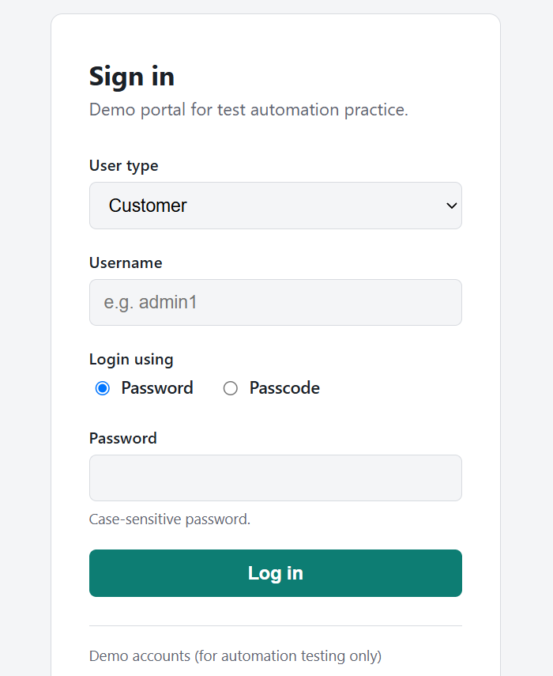
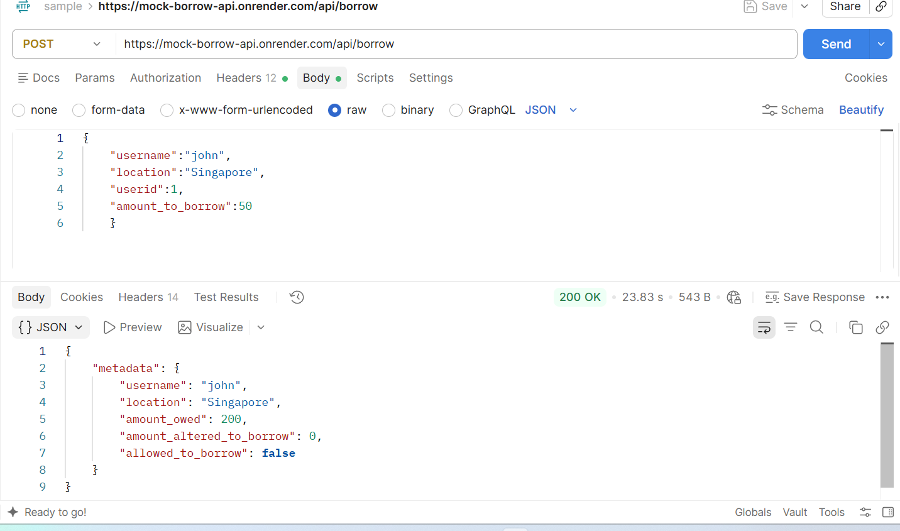
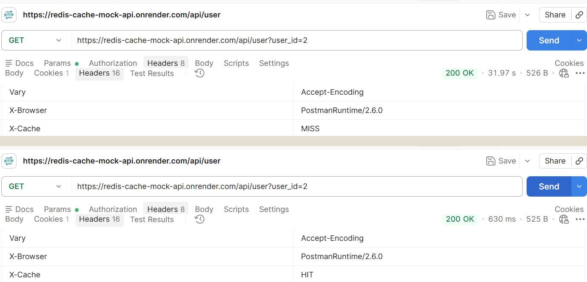
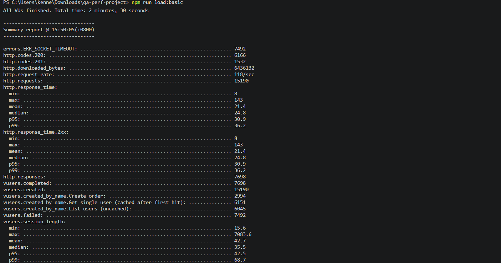
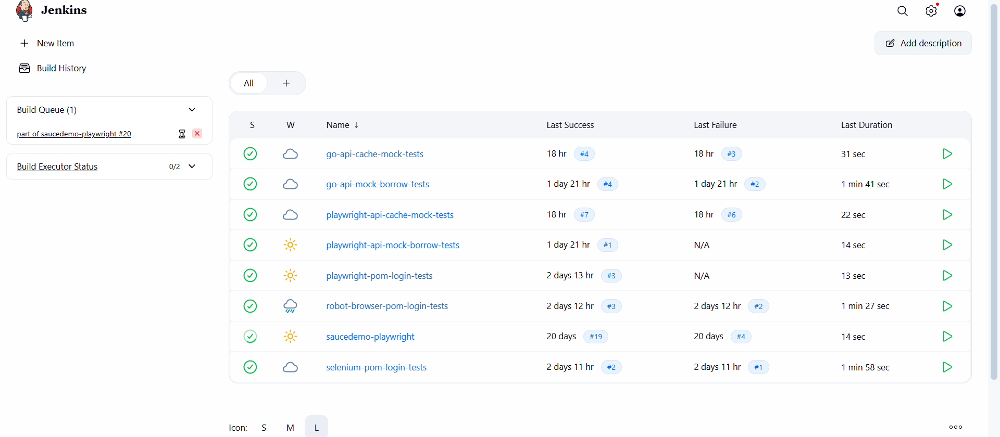

QA Automation Engineer — CI/CD, API testing, and frameworks built from the ground up
I spent over a decade teaching mathematics before moving into QA. Since then I've built test automation frameworks from scratch across enterprise platforms in Singapore and the casino/ integrated resort industry in South Korea — most recently leading functional and performance testing for Inspire Entertainment Resort's website and reservation systems, work that contributed to a 95% reduction in production defects. My title has shifted with each move — System QA Engineer, Senior QA Analyst, IT QA Engineer — but the throughline has been building automation and CI/CD pipelines from the ground up, with Playwright, Robot Framework, Selenium, Python and Go, and manual testing where it's still the right tool.
Everything below is real, running infrastructure I built myself — live APIs, deployed test suites, and a self-hosted Jenkins pipeline — not sample snippets.
selected work

I built and deployed a login site with admin and customer roles, password and 6-digit passcode auth, then automated the same scenario matrix in three independent frameworks against it — to compare how each one handles the same real testing problem, not to pick a favorite.
Playwright (POM, JS) covers a 20-scenario data-driven suite. Robot Framework, using the Browser library, mirrors it with its own 20 scenarios. Raw Selenium WebDriver with pytest runs a 24-test POM suite. All three are wired into their own Jenkins pipeline on a Docker agent, and all three pass.

A Go API server with real business logic behind it: a borrow limit that rejects requests over 200, a SHA-256-signed response header, and Postgres persistence after I migrated it off in-memory storage mid-project.
I tested it from two directions at once so the coverage wouldn't depend on one framework's
blind spots — a Playwright/TypeScript suite and a Go suite built on the standard library's own
net/http client, both running independently against the same live deployment in
Jenkins.

I built the same cache-aside API three times, once against each of three genuinely different cache technologies, all sharing one Postgres database as the real source of truth — so the behavioral differences between them would be observable in running code, not just a diagram.
Redis (via Upstash) gives active, server-side TTL expiration. The in-memory version is a mutex-protected Go map with lazy expiration and no state shared across restarts. Elasticsearch also does lazy expiration, via a timestamp field, with an explicit delete on update. I covered all three — cache miss, cache hit, and update-triggered invalidation — with dual test suites in Go and Playwright.
workers: 1.
Elasticsearch stays local rather than deployed: the official client rejects the free managed tier's underlying OpenSearch engine outright, and the genuinely-Elasticsearch free tier is only a 14-day trial. Rather than force a deployment that misrepresents the trade-off, it's tested locally against real Elasticsearch and Kibana instead.

An earlier same-machine load test threw vague failures — EADDRINUSE, generic
socket timeouts. Instead of assuming those were real application problems, I re-ran the exact
same test from a genuinely separate machine to find out.
I deployed the target app to a cloud VM (Oracle Cloud's free tier had no capacity in-region,
so I pivoted to a $5/month Vultr instance), tracked down a two-layer firewall lockout where the
cloud provider's firewall and Ubuntu's own ufw were both blocking the port
independently, then ran Artillery from my laptop against the VM: a single-VU baseline, then a
ramp from 2 to 300 requests per second.
Baseline: 34ms, zero failures. Under load, about 49% of requests failed specifically with
ERR_SOCKET_TIMEOUT — a far more precise signal than before — while every request
that did succeed stayed fast, around 31ms at the 95th percentile. That points to a genuine
concurrency ceiling on the single-vCPU VM at roughly 118-175 requests/second sustained, not a
processing-speed problem and not an artifact of the original test setup.

This is the CI system every other project on this page actually runs on — self-hosted, not a managed SaaS pipeline, and rebuilt once already as the underlying hosting changed under it.
A local Docker Jenkins instance plus a distributed controller/agent setup, originally hosted on a DigitalOcean droplet and migrated to Oracle Cloud's Always Free tier after that droplet was deleted. It targets saucedemo.com with Playwright as its reference test suite.